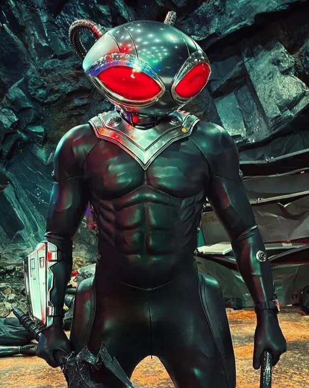

ARRAIA NEGRA / DAVID CLINTON
 Com seu uniforme negro e seu estranho capacete de olhos vermelhos, Arraia Negra é um dos inimigos de Aquaman com visual mais característico. Essa figura ameaçadora há muitos anos causa problemas nos quadrinhos e também será um dos vilões presentes no filme solo do herói de Atlantis. David Hyde e seu pai viviam em um barco, com o qual rodavam os mares do mundo, trabalhando como caçadores de tesouros naufragados. O sonho dos dois era encontrar a Pérola Negra, uma joia lendária que, segundo as histórias, teria o poder de controlar as águas. Foi por causa da busca dessa joia que David descobriu a existência dos atlantes, pois descobriu Xebel, um dos reinos de Atlantis. Além de caçador de tesouros, David Hyde também trabalhava como mercenário. Trabalho esse que faria com que encontrasse o Aquaman pela primeira vez. Após ter sua pesquisa sobre Aquaman destruída, o cientista Dr. Stephen Shin contratou David Hyde para invadir o farol onde morava Thomas Curry, pai de Arthur Curry, o Aquaman. David teria que revistar o local em busca de uma amostra do sangue de Arthur que Dr. Shin havia escondido. No entanto, as coisas não saíram como planejadas, e David entrou em combate contra Thomas Curry, provocando um ataque cardíaco fatal no faroleiro. Aquaman chegou a tempo de impedir David, mas foi incapaz de salvar o pai. Tomado pela vingança, Aquaman rastreou o homem que havia provocado a morte de seu pai até um barco no mar. Debaixo da chuva e na escuridão, Aquaman estrangula o homem que ele achava ser o culpado. No entanto, Arthur não matou David, mas sim o pai do mercenário. Após presenciar a morte do próprio pai, David jurou vingança a Aquaman. Construiu para si uma armadura supertecnológica, e adotou o nome de Arraia Negra.